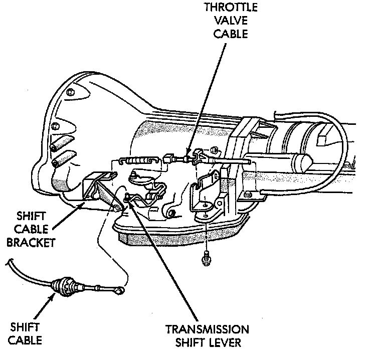

Shift Cable Adjustment

GENERAL INFORMATION
Check adjustment by starting the engine in Park and Neutral. Adjustment is OK if the engine starts only in these positions. Adjustment is incorrect if the engine starts in one but not both positions. If the engine starts in any position other than Park or Neutral, or if the engine will not start at all, the park/ neutral position switch may be faulty.
ADJUSTMENT PROCEDURE
1. Shift transmission into Park.
2. Raise vehicle.
3. Release cable adjuster clamp (at transmission end of cable) to unlock cable.
4. Unsnap cable from cable mounting bracket on transmission.
5. Slide cable eyelet off transmission shift lever.
6. Verify transmission shift lever is in Park detent by moving lever fully rearward. Last rearward detent is Park position.
7. Verify positive engagement of transmission park lock by attempting to rotate propeller shaft. Shaft will not rotate when park lock is engaged.
8. Slide cable eyelet onto transmission shift lever.
9. Snap shift cable adjuster into mounting bracket on transmission.
10. Lock shift cable by pressing cable adjuster clamp down until it snaps into place.
11. Lower vehicle and check engine starting. Engine should start only in Park and Neutral.